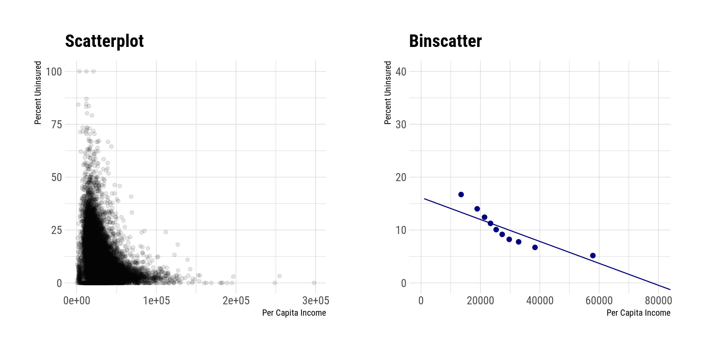
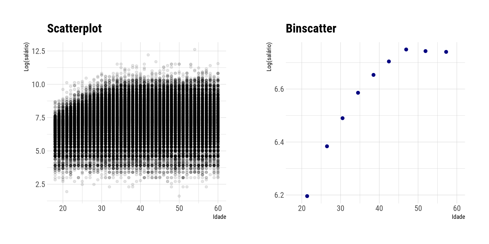

library(dplyr)
library(ggplot2)
library(binsreg)
library(haven)
library(patchwork)
library(hrbrthemes)
library(PNADcIBGE)
acs_data <- read_dta(
"https://github.com/nppackages-replication/CCFF_2022_wp/raw/master/CCFF_2022_ACS_1.dta"
)Binscatter
Visualizando relações entre variáveis com binned scatterplots
R
Econometria
Visualização de dados
Introdução
Neste post, irei tratar sobre o binscatter/binsreg seguindo o trabalho de Cattaneo et al. (2022). Este trabalho discute o gráfico do tipo binscater, que é comumente utilizado como alternativa ao scatterplot tradicional. Esse tipo de gráfico é uma ferramenta bastante útil para a visualização de relação entre duas variáveis. Nesse trabalho, os autores discutem um conjunto de falhas no procedimento usualmente adotado na utilização do binscatter. Adicionalmente, os autores desenvolvem a fundamentação teórica para a chamada regressão binscatter (binsreg), fornecendo um conjunto de procedimentos, como ajustes para covariáveis, testes formais para hipóteses, por exemplo, de linearidade. O método desenvolvido pelos autores também permite que a análise possa envolver variáveis binárias, de contagem e outros tipos de variáveis categóricas.
Primeiro Exemplo
Suponha que você queira analisar visualmente a relação entre a variável \(y\) e \(x\). A prática comum é utilizar um scatterplot na intenção de visualizar alguma padrão de correlação. No entanto, em casos como muitos pontos, esse tipo de abordagem é prejudicada. Dessa forma, o binscatter aparece como uma ferramenta alternativa para esse tipo de visualização. O procedimento consiste em separar o suporte da variável \(x\) em algumas “cestas” (bins) e calcular um valor único (comumente a média) da variável \(y\) para cada conjunto separadamente.
O código abaixo realiza uma comparação entre o scatterplot tradicional e o binscatter usando os dados disponibilizados por Cattaneo et al. (2022). Vale destacar que os autores disponibilizaram pacotes em R, Python e Stata, o que facilita a replicação do artigo. Veja este link para mais detalhes.
Primeiramente, compara-se apenas o scatterplot com o binscatter. Os autores mostram um conjunto de visualizações adicionais com os mesmos dados que podem trazer mais (ou menos) informações, conforme a escolha da análise. Nessa análise, a variável \(x\) é a renda per capita de um zip code (uma região coberta por um código postal) e a variável \(y\) é a taxa da população sem seguro saúde na região. O binscatter foi construído usando 10 bins de forma arbitrária. Isto é, cada ponto representa um decil da distribuição da variável do eixo x. No eixo y, é apresentada a média da taxa pessoas não seguradas dentro de cada grupo (decil) de renda.
# binscatter perCapitaIncome x uninsuredRate
out_binsreg <- binsreg(
y = acs_data$uninsuredRate,
x = acs_data$perCapitaIncome,
data = acs_data,
nbins = 10,
polyreg = 1
)# scatterplot perCapitaIncome x uninsuredRate
p1 <- ggplot(acs_data, aes(x = perCapitaIncome, y = uninsuredRate)) +
geom_point(alpha = 0.1) +
labs(
title = "Scatterplot",
x = "Per Capita Income",
y = "Percent Uninsured"
) +
theme_ipsum_rc()
p2 <- out_binsreg$bins_plot +
labs(
title = "Binscatter",
x = "Per Capita Income",
y = "Percent Uninsured"
) +
theme_ipsum_rc() +
coord_cartesian(
xlim = c(0, 80000),
ylim = c(0, 40)
)
p1 + p2

Least Squares Binscatter
No paper, Cattaneo et al. (2022) detalham o que é chamado de least squares binscatter. O método é uma extensão do binscatter tradicional e permite a inclusão de covariáveis. Os autores afirmam que o objetivo é estimar o valor esperado de \(y\) dado \(x\), controlando por um conjunto adicional de variáveis \(\mathbf{w}\) quando for necessário. Isto é, o objetivo do binscatter seria observar a relação entre \(y\) e \(x\) controlando por \(\mathbf{w}\). Os autores trabalharam com um modelo semi-linear definido por: \[y_i = \mu_0(x_i) + \mathbf{w_i}^\prime \gamma_0 + \epsilon_i, \quad \mathbf{E}[\epsilon_i | x_i, \mathbb{w_i}] = 0.\] Note que o modelo é linear em \(\mathbf{w_i}\), mas não em \(x_i\).
Estimação
A estimação do binscatter tem três elementos:
- A separação do suporte da variável \(x\) em cestas (bins);
- A estimação dentro de cada cesta (bin);
- O tratamento adotado para os controles \(\mathbf{w}_i\).
Primeiramente, é preciso escolher o número de bins, \(J\), e como dividir o suporte da variável nesses bins. A prática comum, segundo os autores, é adotar um espaçamento por quantis. O esquema de partição é denotado por \(\widehat{\Delta} = \{\widehat{\mathcal{B}}_1, \widehat{\mathcal{B}}_2, \dots,\widehat{\mathcal{B}}_J \}\), em que as observações do primeiro quantil de \(x\) pertencem ao conjunto \(\widehat{\mathcal{B}}_1\), as observações do segundo quantil de \(x\) pertencem ao conjunto \(\widehat{\mathcal{B}}_2\) e assim por diante.
Sobre a estimação dentro de cada bin, tem-se que a prática usual é calcular a média de \(y\) dentro de cada bin. Isto é, seria estimado um modelo piecewise constante (\(\mathbb{E}[y_i|x_i] = \overline{y}_j\) para o j-ésimo bin). O binscatter canônico é definido da seguinte forma: \[\mathbb{E}[y_i|x_i] = \widehat{\mathbf{b}}_0 (x_i)^\prime \widehat{\mathbf{\beta}},\]
\[\widehat{\mathbf{\beta}} = \underset{\beta \in \mathbb{R}^J}{\operatorname{argmin}} \sum_{i = 1}^n \left(y_i - \widehat{\mathbf{b}}_0 (x_i)^\prime \beta \right)^2,\] em que \(\widehat{\mathbf{b}}_0 = \left(\mathbb{1}_{\widehat{\mathcal{B}}_1}, \mathbb{1}_{\widehat{\mathcal{B}}_2}, \dots, \mathbb{1}_{\widehat{\mathcal{B}}_J} \right)\) é uma matriz de indicadores binários que indica a qual bin pertence cada observação.
Cattaneo et al. (2022) ampliam o binscatter canônico para permitir a inclusão de controles e permitir funções \(\widehat{\mathbf{b}}\) mais flexíveis. A estimação é feita da seguinte forma:
\[ \begin{bmatrix} \widehat{\mathbf{\beta}} \\ \widehat{\mathbf{\gamma}} \end{bmatrix} =\underset{\beta, \gamma}{\operatorname{argmin}} \sum_{i = 1}^n \left(y_i - \widehat{\mathbf{b}} (x_i)^\prime \beta - w_i^\prime \gamma \right)^2. \] Nesse caso, tem-se que \(\mathbb{E}[y_i|x, \mathbf{w}] = \widehat{\mathbf{b}} (x)^\prime \widehat{\mathbf{\beta}} + \widehat{\mathbf{w}}^\prime \widehat{\mathbf{\gamma}}\), onde \(\widehat{\mathbf{w}})_i^\prime\) indica o valor de \(\mathbf{w}_i\) no qual o valor esperado é calculado. Por exemplo, a expressão anterior pode ser computada no valor médio das variáveis de controle, \(\overline{\mathbf{w}}^\prime\).
Escolha do número de bins
Comumente, os números de bins são escolhidos de forma arbitrária, por exemplo, \(J = 20\) ou \(J = 50\). Cattaneo et al. (2022) propõem um método para escolher o número de bins de forma mais sistemática. Os autores consideram duas abordagens que dependem do objetivo da análise: estimação não-paramétrica ou visualização de dados.
A primeira opção, \(J_{IMSE}\), é baseada no erro quadrático médio integrado (IMSE) ótimo. O número de bins sendo escolhido dessa forma permite a utilização da regressão binscatter para quantificar a incerteza das estimativas geradas. A outra opção, é definir o número de bins \(J\) de forma arbitrária, mas escolher a ordem polinomial \(p\) da função \(\mathbf{b}(x)\) que minimiza a distância entre \(J_{IMSE}(p, v)\) e \(J\), em que \(v\) é a derivada de interesse da função do valor esperado de \(y\) com relação a \(x\). Para \(v = 0\), a quantidade de interesse é \(\mathbb{E}[y_i|x, \mathbf{w}]\).
Exemplo de aplicação
Como aplicação, iremos utilizar os dados da PNAD para verificar a relação entre salários e idade. O objeto pnadc_2019 contém os dados da PNAD Contínua para o 4º trimestre de 2019, com as variáveis de interesse já selecionadas. Foram selecionadas as seguintes variáveis:
V2007: Sexo;V2009: Idade;V2010: Cor ou raça;VD3004: Nível de instrução mais elevado alcançado;VD4019: Rendimento mensal habitual de todos os trabalhos para pessoas de 14 anos ou mais de idade;V1028: Peso do domicílio e das pessoas.
pnadc_2019 <- get_pnadc(
year = 2019,
quarter = 4,
selected = FALSE,
vars = c("V2007", "V2009", "V2010", "VD3004", "VD4019"),
defyear = 2019,
design = FALSE,
savedir = "~/Downloads/pnad"
) %>%
select(V2007, V2009, V2010, VD3004, VD4019, V1028) %>%
filter(!is.na(VD4019), V2009 >= 18, V2009 <= 60)head(pnadc_2019)# A tibble: 6 × 6
V2007 V2009 V2010 VD3004 VD4019 V1028
<fct> <dbl> <fct> <fct> <dbl> <dbl>
1 Mulher 45 Parda Médio completo ou equivalente 2100 146.
2 Mulher 54 Parda Médio completo ou equivalente 1000 134.
3 Homem 24 Branca Médio completo ou equivalente 2500 196.
4 Mulher 21 Parda Médio completo ou equivalente 1000 196.
5 Homem 30 Branca Médio completo ou equivalente 1600 171.
6 Homem 28 Parda Superior completo 1600 171.Abaixo, é estimado o binscatter com a seleção automática do número de bins. O parâmetro randcut é um valor que representa a proporção dos dados que será utilizada no momento de seleção dos bins. No caso, estamos usando todos os dados (randcut = 1). Como controle (\(\mathbf{w}\)), utilizamos as variáveis V2007, V2010 e VD3004. O parâmetro weights indica o peso de cada observação na estimação. Nesse caso, utilizamos o peso do domicílio e das pessoas, V1028.
out_binsreg <- binsreg(
y = log(pnadc_2019$VD4019),
x = pnadc_2019$V2009,
w = ~ V2007 + V2010 + VD3004,
data = pnadc_2019,
weights = pnadc_2019$V1028,
binsmethod = "dpi",
randcut = 1
)O algortimo selecinou 9 bins.
out_binsregCall: binsreg
Binscatter Plot
Bin/Degree selection method (binsmethod) = IMSE direct plug-in (select # of bins)
Placement (binspos) = Quantile-spaced
Derivative (deriv) = 0
Group (by) = Full Sample
Sample size (n) = 204211
# of distinct values (Ndist) = 43
# of clusters (Nclust) = NA
dots, degree (p) = 0
dots, smoothness (s) = 0
# of bins (nbins) = 9A Figura 2 abaixo faz a comparação entre o scatterplot e o binscatter. Observa-se que no scatterplot tradicional é difícil visualizar a relação entre as variáveis, enquanto que no binscatter é possível observar uma relação positiva entre idade e salário, com uma leve queda após os 50 anos. O crescimento tende ser mais acentuado entre 20 e 30 anosver mais claramente a relação entre essas duas variáveis. Entre 20 e 30 anos, o salário cresce mais rapidamente. Após os 50 anos, o salário médio tende a apresentar uma leve queda.
p1 <- ggplot(pnadc_2019, aes(x = V2009, y = log(VD4019))) +
geom_point(alpha = 0.1) +
labs(
x = "Idade",
y = "Log(salário)",
title = "Scatterplot"
) +
theme_ipsum_rc()
p2 <- out_binsreg$bins_plot +
theme_ipsum_rc() +
labs(
x = "Idade",
y = "Log(salário)",
title = "Binscatter"
)
p1 + p2

Considerações Finais
Neste artigo, é feita uma breve apresentação sobre o binscatter, seguindo o trabalho de Cattaneo et al. (2022). O binscatter é uma ferramenta útil para visualização de dados e estimação de relações não-paramétricas entre duas variáveis, sendo a principal vantagem a possibilidade de visualização da relação entre duas variáveis de forma mais clara do que no scatterplot tradicional.
Referências
Cattaneo, Matias D., Richard K. Crump, Max H. Farrell, e Yingjie Feng. 2022. «On Binscatter». https://arxiv.org/abs/1902.09608.